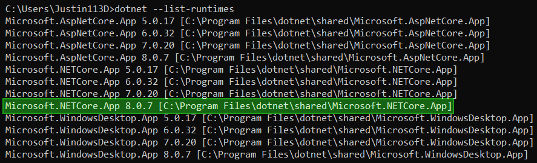

Installing Sonic Adventure I/O🔗︎
Installing SAIO is not as straightforward as most other addons. It requires .NET 8 to be installed, as the addon relies on C# Libraries to boost performance and reduce on the amount of code needed to manage. You will have to ensure that you have the .NET 8 Runtime installed before being able to use the addon to its fullest.
It's also worth installing SATools to be able to obtain and make use of the files that the addon supports.
Installing .NET 8🔗︎
If you are unsure of whether your machine already has .NET 8 installed, you can check by opening the console and running dotnet --list-runtimes.
The output should look similar to this:

Notice the line marked in green, Microsoft.NETCore.App 8.X.X. if you find this among your installed runtimes, you have all you need!
If you don't have the needed runtime installed, head over to the download page and install the runtime.
Note
The website recommends downloading the SDK - the software development kit. Unless you are a developer, you may only want the runtime. You can head over to "All .NET 8.0 downloads" and download the Desktop runtime from further below, saving space on your machines storage.
Installing the Sonic Adventure Toolset🔗︎
The newest release of SATools can always be downloaded here:
Note that the toolset only works on Windows. It can also update itself, so you will not need to re-download it in the future. Just unpack and store it somewhere where you will find it again.
For more information on the toolset, visit the wiki.
Installing Blender🔗︎
The Addon is only supported on versions of Blender 4.2 and above.
A recommendation is to get Blender through Steam. This will ensure you're always on the latest release version.
Installing the Addon🔗︎
The addon utilizes the blender extension system, yet, due to various reasons, we cannot host the addon on the official blender extension repository.
That is why we have set up our own repository under https://Justin113D.com/blender/saio/, which will always host the newest release of the addon.
To set up the repository and download the addon, follow these steps:
- Open blender
- Open the preferences and open the
Get Extensionstab - Expand
Repositorieson the top right - Click the
+on the top right and selectAdd remote Repository - Enter
https://justin113d.com/blender/saio/index.jsonfor the URL and checkCheck for Updates on Startup - Confirm
- Rename the newly added list entry from
Justin113D.comtoSonic Adventure I/O - Select the list entry and change the module from
justin113d_comtosaio - Press the 🔄 button in the top right to refresh the module
- Search for
sonicin the search bar and install the addon
Congratulations! You have successfully installed the add-on!
Update the addon🔗︎
- Repeat steps 1-3 from installation
- Click the
Vbutton in the top right - Click the 🔄 button
- Search for the installed addon in your list
- Click its "update" button